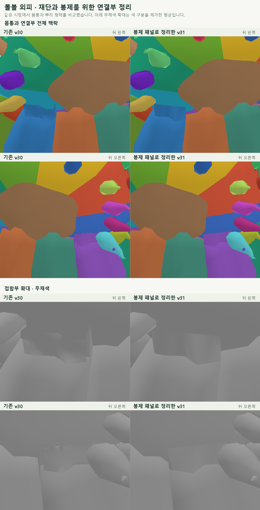

MORBOL · SEWING STRUCTURE · V31
연결부 재단·봉제 도안
좌우 연결부를 단순한 패널로 정리했습니다.
몸통과 만나는 경계는 분리·조립할 수 있도록 유지했습니다.
검정 실선: 재단선초록 점선: 봉제선파랑 점선: 몸통 탈부착 경계짧은 눈금: 맞춤 표시
인쇄용 SVG는 위 설정을 반영합니다. PDF는 모델 크기 100%, 시접 10mm 고정이며 인쇄 확인선이 들어 있습니다.
파랑 부착선은 몸통을 잘라내는 선이 아닙니다. 몸통과 원래 촉수의 맞춤 위치를 함께 확인해 주세요. 실제 착용자 치수·원단·탈부착 방식이 확정되기 전에는 연결부를 시험 제작해 맞음을 확인해야 합니다. 이 도안은 표시된 연결 패널용이며, 몸통 전체 재단 도안은 아닙니다.
3D 연결부 전후 보기
